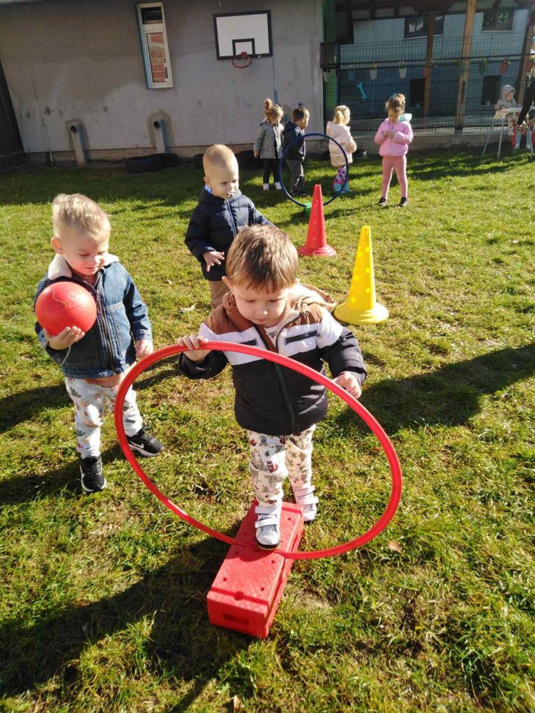
U ceni
Školica sporta
Časovi za uzrast od 1 do 7.Deca kroz igru zavole kretanje.
Prva privatna akreditovana predškolska ustanova u Požarevcu.Male grupe, vila sa dva dvorišta i subvencija grada.
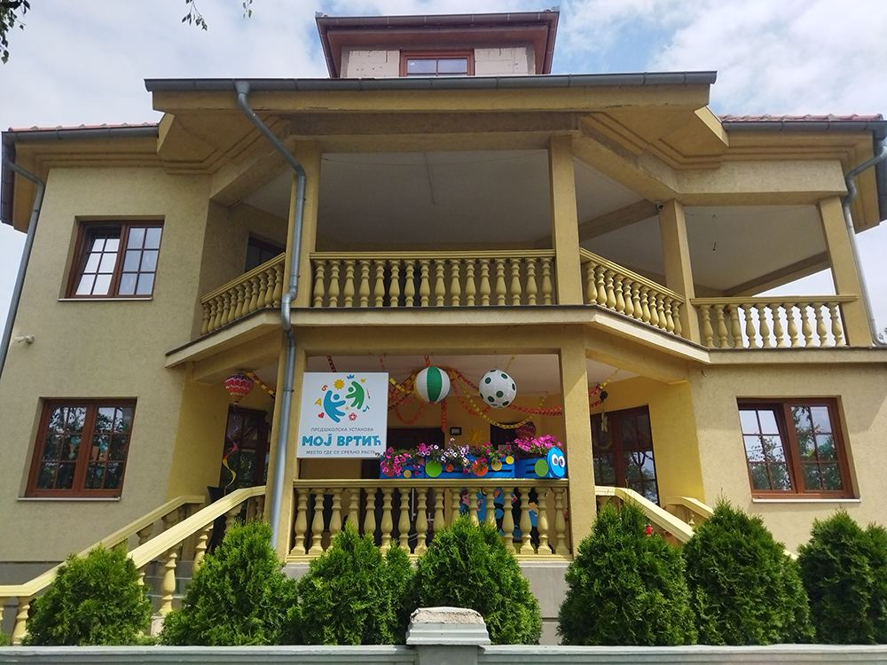
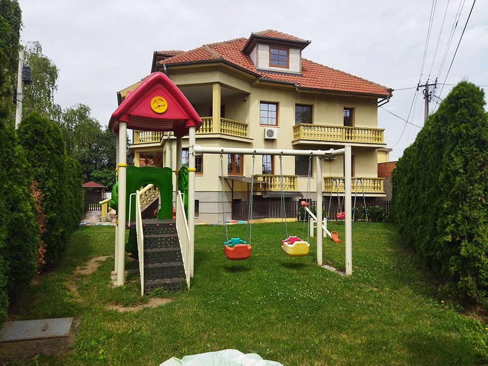
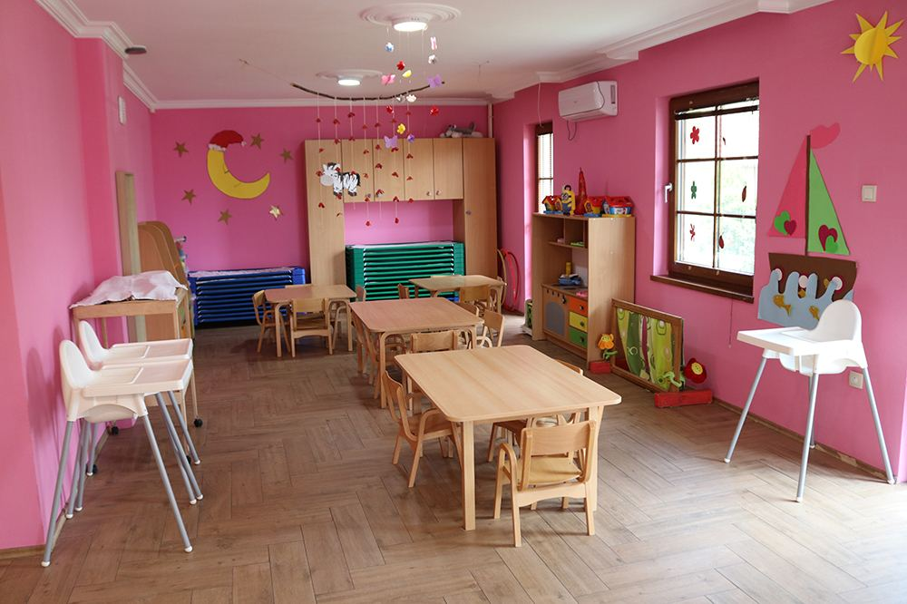
Radimo od decembra 2019, uz subvencije grada.Grupe su male, posvećene potrebama svakog deteta.
Jasle su u prizemlju sa podnim grejanjem.Vrtićke grupe i predškolci borave na spratu.
Pomerite klizač i pogledajte u koju grupu ide i gde u vili boravi.Upisujemo decu od navršene godine do polaska u školu.
Pripremili su ih naši stručni saradnici, kroz igru i za svaki uzrast.Kliknite na program i pročitajte kako izgleda.

Časovi za uzrast od 1 do 7.Deca kroz igru zavole kretanje.
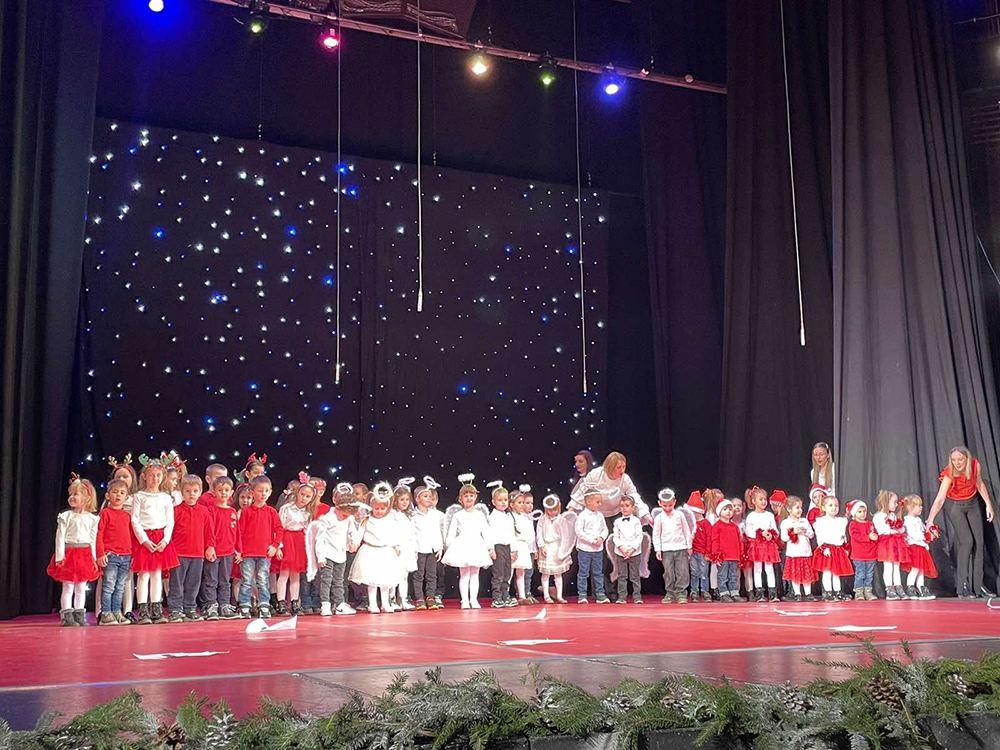
Tonovi, ritam i note kroz igru.Na kraju godine, mini koncert.
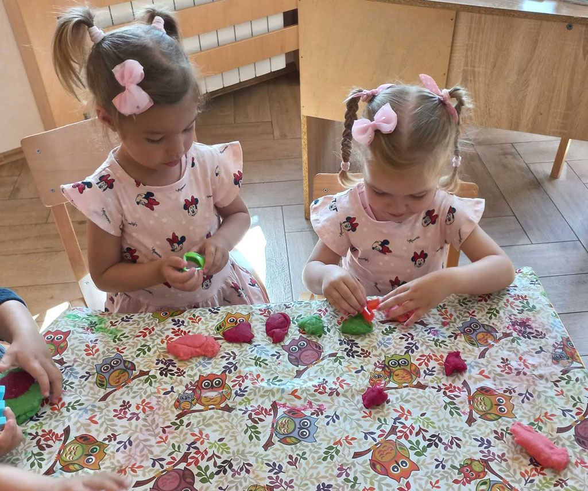
Prati govor svakog deteta.U grupi i jedan na jedan.
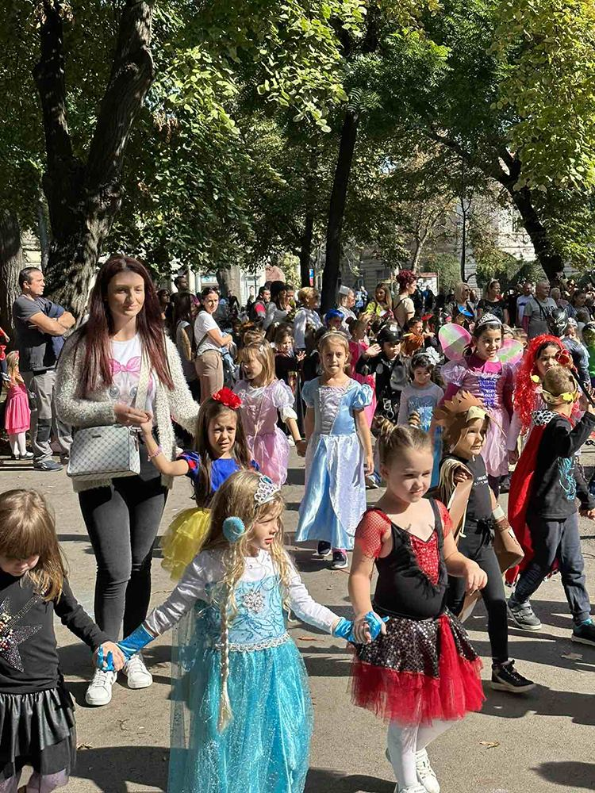
Uloga, pokret i mnogo mašte.Raste i samopouzdanje.
Prve reči na stranom jeziku, kroz pesmu i igru.
Igre i materijali za pažnju, brojeve i logiku.
Boje, papir i plodovi iz dvorišta postaju umetnost.
Jelovnik propisuje dečji nutricionista, raznovrstan i izbalansiran.
Noćenje u vrtiću, u dodatnoj ponudi.
Subotnje druženje i stvaranje, u dodatnoj ponudi.
Skrolujte i lopta će vas provesti kroz dan.
Dobro jutro! Ranac na mesto, pa polako u igru.
Zajednička priprema i doručak u grupi.
Pranje ruku, kulturno-higijenske navike i dogovor šta ćemo raditi.
Vaspitno-obrazovni rad, dvorište, školica sporta i logopedske radionice.
Voćka i predah, pa priprema za odmor.
Jaslene i mlađa vrtićka grupa spavaju, starije imaju usmerene aktivnosti.
Topao obrok iz naše kuhinje, po jelovniku nutricioniste.
Slobodna igra u prostornim celinama i napolju, kad vreme dozvoli.
Mala užina pred kraj dana.
Slobodne aktivnosti dok ne stignu mama i tata.
Dva ograđena dvorišta nemaju dodir sa ulicom.U jednom je igralište, a drugo služi za organizovanu igru i sport.
Deca seju i neguju cveće, začinsko bilje, povrće i voće.Ono što uzgaje koristimo i u ishrani.
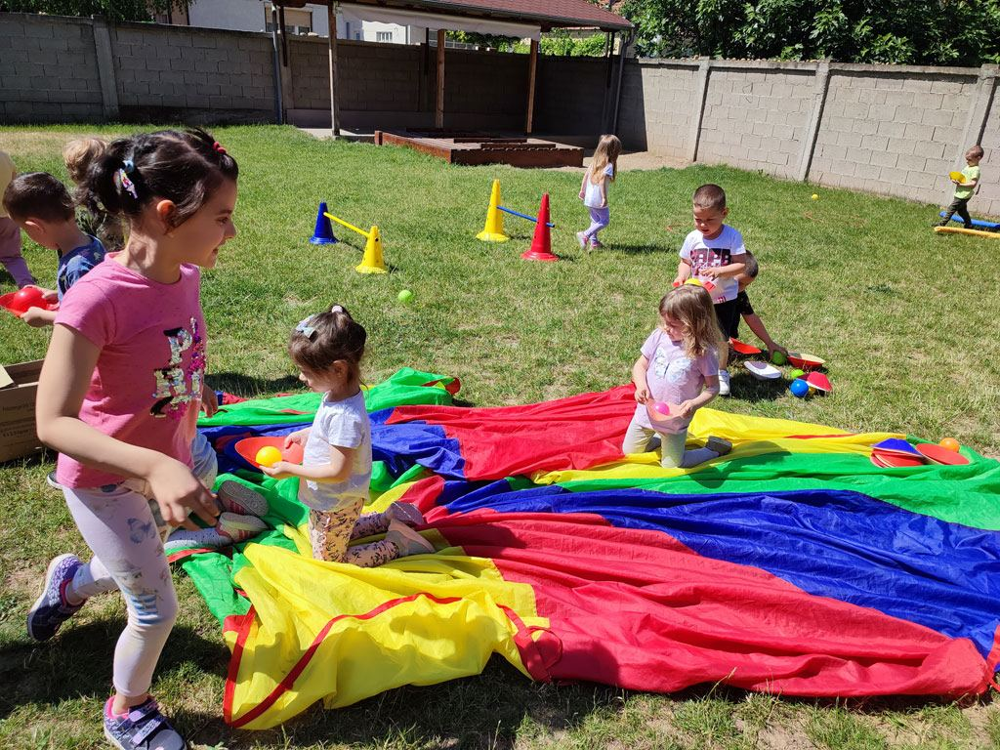
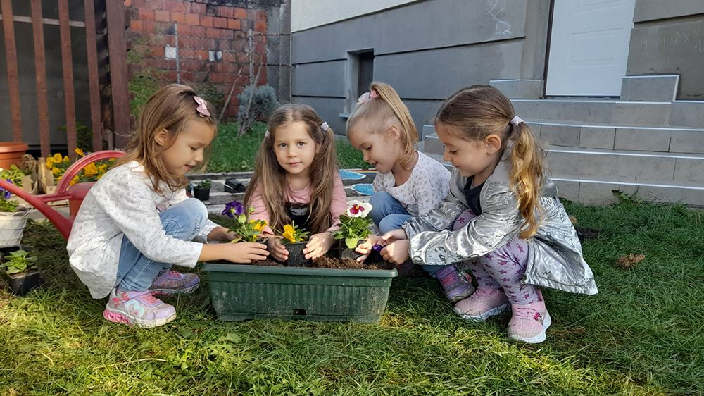
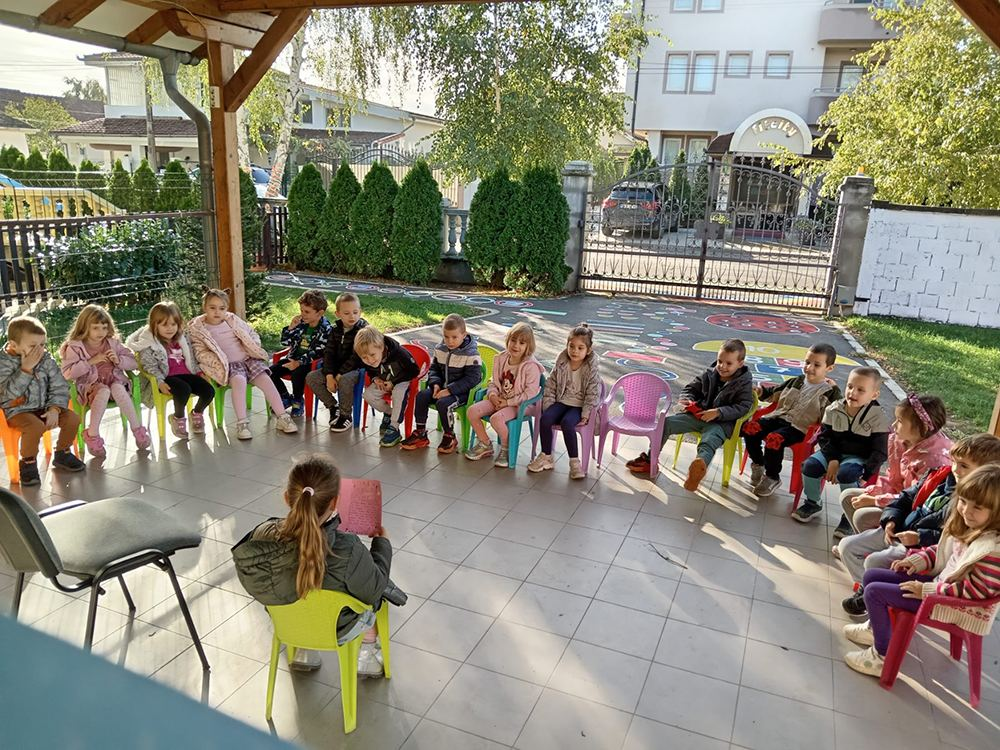
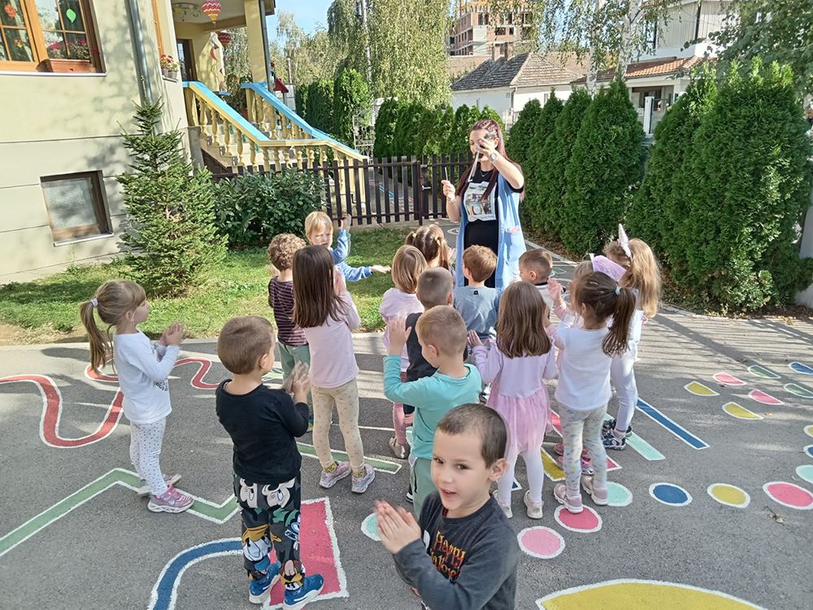
Vaspitače prati tim stručnih saradnika.Rade sa decom pojedinačno i u grupi i savetuju roditelje.
Vaspitači i medicinske sestre vaspitači, kreativni i posvećeni deci.
Radionice u grupi i individualni tretmani, plan stimulacije za svako dete.
Prati razvoj i pomaže roditeljima u razvoju roditeljskih kompetencija.
Propisuje jelovnik po pravilniku o ishrani dece u predškolskim ustanovama.
Vodi školicu sporta, od zagrevanja do rastezanja.
Vodi muzičko igralište i hor, uglavnom uz klavir.
Sve što radimo nastaje zajedničkim radom dece i odraslih, u prostoru koji je inspirativan za dete.Radimo po Novim osnovama programa „Godine uzleta“
Grad uplaćuje subvenciju svakog meseca na vaš račun.Sva tri koraka možete da završite u jednom danu.
U upravi državnog vrtića, Vuka Karadžića 1, zatražite odbijenicu.
Termin ne morate da zakazujete, a pogodno vreme možete proveriti telefonom.
Dođite kod nas u Miodraga Markovića 10a, sa odbijenicom, uz najavu na 062 660 444.
Potpisujete ugovor u tri primerka, a ostalu dokumentaciju pripremamo mi.
Sa odbijenicom i ugovorom idite u gradsku upravu, soba 12 u prizemlju, bez zakazivanja.
Ponesite karticu sa brojem računa, izvod iz matične knjige rođenih i očitanu ličnu kartu.
Novac stiže na vaš lični račun, svakog meseca.
Svi koji su na konkursu u državnom vrtiću „Ljubica Vrebalov“ ostali „ispod crte“, jer nije bilo dovoljno mesta.
Sve donesite pre polaska deteta. Pri upisu popunjavate saglasnosti i upitnik i dogovaramo adaptaciju.
Odeća neka bude udobna i jednostavna, da dete može i samo da se presvuče.
Adaptacija traje dve do tri nedelje, nekad i duže.Uspeh zavisi od saradnje roditelja i vaspitača.
Par dana ranije pričajte detetu o vrtiću i kako se u njemu živi.
Recite vaspitačima navike, osobine i zdravstvene tegobe deteta.
Mlađe dete polako navikavajte na čvrstu hranu, svoj krevet i toalet.
Užurbanost uznemirava dete, pa krenite na vreme i bez žurbe.
Kada se oprostite, ne odugovlačite i ne vraćajte se.
Dete će primetiti, a to samo produžava strepnju.
Bez većih pauza na početku, radi kontinuiteta.
Neka je ponese i zadrži u vrtiću, ali bez gomile stvari.
Obećajte samo ono što ćete ispuniti i ne pretite vrtićem.
Dečje reakcije znaju da budu burne, ali su kratkotrajne.
Uobičajeno je i očekivano u periodu adaptacije.
Privremeno vraćanje starih navika prolazi samo od sebe.
Ako ste vi mirni i optimistični, i dete će se brže opustiti.
Priredbe, posete, maskenbali i obična srećna jutra.Kliknite na fotografiju da je uvećate.
Niste našli odgovor?Pozovite nas na 062 660 444.
Prošetajte našim prostorijama i upoznajte vaspitače.Uverite se sami kako izgleda naš dan.